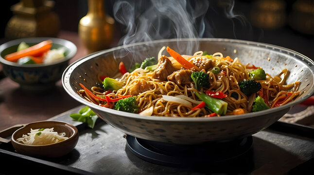

Platillos típicos
| Platillo | Descripción |
|---|---|
| Dim Sum | Pequeñas porciones de comida servidas en canastas de bambú, típicas del sur de China. |
| Chow Mein | Fideos fritos mezclados con verduras y carne. |
| Mapo Tofu | Tofu suave en salsa picante con carne molida. |
| Pato Pekín | Pato asado servido con tortillas finas, pepino y salsa hoisin. |
Ingredientes característicos
| Ingrediente | Uso principal |
|---|---|
| Salsa de soya | Condimento base usado en marinados y guisos. |
| Jengibre | Aporta frescura y aroma en sopas y carnes. |
| Tofu | Proteína vegetal común en sopas y platillos salteados. |
| Fideos de arroz | Base de sopas y platillos como Chow Fun. |
Postres populares
| Postre | Descripción |
|---|---|
| Tanghulu | Frutas caramelizadas en un palillo, típicas de invierno. |
| Baozi dulce | Bollos rellenos de pasta dulce de frijol rojo. |
| Pastel de luna | Pan dulce tradicional del Festival de Medio Otoño. |